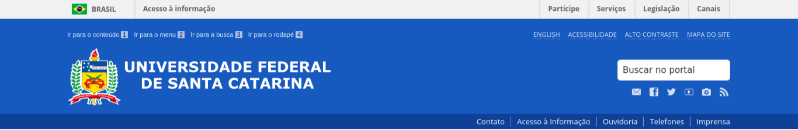

<!DOCTYPE html><html lang="pt-br"><head><meta charset="utf-8"><title>Horto de plantas medicinais da UFSC</title><meta name="viewport" content="width=device-width, initial-scale=1"><link rel="stylesheet" type="text/css" href="_assets/css/main.css"></head><body></body></html><div class="header_ufsc"></div><div class="header"><ul class="menu"><li><a id="header-logo" href="index.html"></a></li><li><a href="index.html">Início</a></li><li><a href="sobre.html">Sobre o Horto</a></li><li><a href="resultados.html">Plantas</a></li><li><a href="index.html#contato">Contato</a></li><li><a href="adm_login.html">Login</a></li><button class="menuUsoSeguro">Uso seguro de plantas</button></ul></div><div class="popup" id="confirmacao"><div class="container"><div class="mensagem"><div class="texto"><p>Sua mensagem foi enviada com sucesso</p></div><div class="cta"><button onclick="window.location.href='sugestao.html'">Enviar outro formulário</button><button class="cancel-btn" onclick="window.location.href='index.html'">Retornar à página inicial</button></div></div></div></div><div class="container" id="sugestao"><div class="mensagem"><div class="titulo"><h1>Sugerir alteração em ficha de planta</h1></div><form class="texto"><div class="dadosUsuario"><p>O formulário a seguir será encaminhado para a equipe do Horto que irá revisá-lo e entrar em contat através do seu endereço de e-mail.</p><div class="nome"><label for="nome">Nome:</label><input id="nome" type="text"></div><div class="email"><label for="email">Email:</label><input id="email" type="text"></div></div><div class="qualPlanta"><label for="selecionaNomeCientifico">Sobre qual planta é a sua sugestão?</label><select id="selecionaNomeCientifico"><option value="label" selected></option><option value="achilleaMillefolium">Achillea millefolium</option><option value="varroniaCurassavica">Varronia curassavica</option></select></div><div class="qualInfo"><label for="selecionaInfo">Sobre qual informação é a sua sugestão?</label><ul class="infosRadio" id="selecionaInfo"><li><input id="nomePop" type="radio" name="selecionaInfo"><label for="nomePop">Nome Popular</label></li><li><input id="nomeCie" type="radio" name="selecionaInfo"><label for="nomeCie">Nome Científico</label></li><li><input id="descricaoBotanica" type="radio" name="selecionaInfo"><label for="descricaoBotanica">Descrição Botânica</label></li><li><input id="usosPlanta" type="radio" name="selecionaInfo"><label for="usosPlanta">Usos da planta</label></li><li><input id="acoesMedicinais" type="radio" name="selecionaInfo"><label for="acoesMedicinais">Ações medicinais</label></li><li><input id="partesUsadas" type="radio" name="selecionaInfo"><label for="partesUsadas">Partes Usadas</label></li><li><input id="posologia" type="radio" name="selecionaInfo"><label for="posologia">Modo de usar</label></li><li><input id="contraindicacoes" type="radio" name="selecionaInfo"><label for="contraindicacoes">Contarindicações</label></li><li><input id="obsClinica" type="radio" name="selecionaInfo"><label for="obsClinica">Observação clínica em Florianópolis</label></li><li><input id="infoCie" type="radio" name="selecionaInfo"><label for="infoCie">Informações científicas</label></li><li><input id="interacoes" type="radio" name="selecionaInfo"><label for="interacoes">Interações medicamentosas</label></li><li><input id="refs" type="radio" name="selecionaInfo"><label for="refs">Referências</label></li></ul></div><div class="descricaoTextual"><label for="mensagem">Descreva e justifique a alteração necessária de forma detalhada</label><textarea id="mensagem"></textarea></div><div class="upload"><label for="enviarArquivo">Utilize este campo para anexar arquivos caso necessário</label><input id="enviarArquivo" type="file"></div></form><div class="cta"><form class="confirma"></form><button onclick="window.location.href='index.html'">Continuar</button><button class="cancel-btn" onclick="window.location.href='index.html'">Cancelar</button></div></div></div><div class="footer"><div class="grid-container"><div class="logos"><div id="logo-horto-footer" href="index.html"></div><div id="logo-ufsc-footer"></div><div id="logo-css-footer"></div></div><div class="mapa"><h3>Mapa do site</h3><div class="listas"><ul class="paginas"><li><a href="index.html">Página inicial</a></li><li><a href="uso-seguro.html">Uso seguro de plantas</a></li><li><a href="sobre.html">Sobre o Horto</a></li><li><a href="index.html#contato">Contato</a></li><li><a href="admin/login.html">Login</a></li></ul><ul class="etiquetas"><li><a href="resultados.html">Lista de plantas</a></li><li><a href="etiquetas.html">Lista de sintomas</a></li><li><a href="etiquetas.html">Lista de usos</a></li></ul></div></div><ul class="enderecos"><li><a href="#">Rua Endereço Oficial, 245. Trindade - Florianópolis</a></li><li><a href="#">(48) 3232-9595</a></li><li><a href="mailto:hortodohu@contato.ufsc.br">hortodohu@contato.ufsc.br</a></li></ul></div></div>